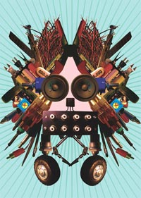

Top
Presenters
#000001
#000002
#000003
|
#000001
電気ｷﾁGUYｽﾞ& GALｽﾞ!!! 緊急ﾐｰﾃｨﾝｸﾞ!!!
日時: 2005.05.12
会場: SuperDeluxe
プレゼンテーション:
biopresence (._.)_.)
盗聴電機大学×音質向上委員会（@＿@）
ライブパフォーマンス:
音がﾊﾞﾝﾄﾞ名（｀o´）
藤幡正樹（ ﾟД ﾟ）
伊東篤宏（* _ *）
DJ:
A.K.I. (KRUSH GROUP/A.K.I.PRODUCTIONS)（☆∀☆）
協力: ﾗｼﾞｵﾗｲﾌ / SuperDeluxe
ｺｰﾃﾞｨﾈｰﾀｰ: exonemo / 堀尾寛太 / 城一裕
ｻﾎﾟｰﾄｽﾀｯﾌ: 林弘樹(ﾌﾗｲﾔｰ) / 平田幾美 / 毛利悠子 / 村上和代 / 福沢恭
掲載記事: ﾗｼﾞｵﾗｲﾌ (2005年7月号) / REALTOKYO
写真
ドークボット東京上陸 !
2005年5月12日(木)、すでに世界20都市以上が感染している「電気を使って変なコトをする人々」のコミュニティ「ドークボット」が、とうとうこの東京にも上陸した。『ドークボット TΩKYΩ』の立ち上げイヴェントの会場に選ばれたのは、六本木のSuper Deluxe。イベントの開始前から、会場には何やら怪しげな妖気が充満している。いわゆるアート系でも、デザイン系でも、ましてや秋葉原系でもない、獰猛な知性と柔軟な感性が、静かに息を潜めながら、これから始まろうとしている何かを虎視眈々と狙っている―そんな感じだ。
 そんな不思議な雰囲気の中、ちょうどICCの「オープンネイチャー展」のためにロンドンから来日していた福原志保＋ゲオルク・トレメルの「バイオプレゼンス」が登場。電気と思いきや、いきなりバイオ系のプレゼンテーションが始まる。ゲオルクは「people doing strange things with software」と書かれたTシャツを着ている（笑）考えてみれば、原子力の世紀も情報の世紀もすでに終り、21世紀がバイオの世紀になることはまちがいない。だからこそ、あの場で大学のレクチャー風のプレゼンをすることも、なにやら試験管などを机の上に並べて手動DNA抽出実験をするのも、そこからカクテルをつくってしまうのも、十分に変なコトであると同時に、それを超えて素朴な説得力があった。ホーム・ブリュー・コンピュータならぬ、ホーム・ブリュー・DNAの世紀。しょっぱなから、事態は予想以上に面白い方向に動き始めたようだ。 そんな不思議な雰囲気の中、ちょうどICCの「オープンネイチャー展」のためにロンドンから来日していた福原志保＋ゲオルク・トレメルの「バイオプレゼンス」が登場。電気と思いきや、いきなりバイオ系のプレゼンテーションが始まる。ゲオルクは「people doing strange things with software」と書かれたTシャツを着ている（笑）考えてみれば、原子力の世紀も情報の世紀もすでに終り、21世紀がバイオの世紀になることはまちがいない。だからこそ、あの場で大学のレクチャー風のプレゼンをすることも、なにやら試験管などを机の上に並べて手動DNA抽出実験をするのも、そこからカクテルをつくってしまうのも、十分に変なコトであると同時に、それを超えて素朴な説得力があった。ホーム・ブリュー・コンピュータならぬ、ホーム・ブリュー・DNAの世紀。しょっぱなから、事態は予想以上に面白い方向に動き始めたようだ。
  続いては「盗聴電機大学×音質向上委員会」のプレゼンテーション。知る人ぞ知る雑誌「ラジオライフ」のライター2人によるユニットということで、正統派(というのも何だか変だが)ドークボットの期待大。飛び出したのは、10万円分の乾電池でPCを動かしたり、人体をケーブルの一部としたオーディオシステムなど「やればできるはずだけど誰もやらなかったこと」をやるという、いってみれば質より量のジョン・ケージ派ドークボットともいうべきか。ラジオライフの面目躍如でもある。 続いては「盗聴電機大学×音質向上委員会」のプレゼンテーション。知る人ぞ知る雑誌「ラジオライフ」のライター2人によるユニットということで、正統派(というのも何だか変だが)ドークボットの期待大。飛び出したのは、10万円分の乾電池でPCを動かしたり、人体をケーブルの一部としたオーディオシステムなど「やればできるはずだけど誰もやらなかったこと」をやるという、いってみれば質より量のジョン・ケージ派ドークボットともいうべきか。ラジオライフの面目躍如でもある。
  ここで噂の「(音がバンド名)」の登場。僕は以前、彼らが高円寺円盤で行なっていたウィークリー・ライブに呼んでもらったこともあるので、彼らのパワーとユニークさはすでに体験済みであったが、今回も彼らの十八番のファミコンゲーム・パフォーマンス(というかクイズショウ)を中心に、圧倒的なインパクトのへなちょこさを披露した。二人のへなちょこラップが向うにイってしまいそうになった瞬間、突然ぱたっとそれが途切れる空虚な一瞬がいい。これぞ時間芸術、というか何というか（笑） しかしあの会場全体を巻き込んでしまうにはブラックホールのような妖気には本当に恐れ入る。 ここで噂の「(音がバンド名)」の登場。僕は以前、彼らが高円寺円盤で行なっていたウィークリー・ライブに呼んでもらったこともあるので、彼らのパワーとユニークさはすでに体験済みであったが、今回も彼らの十八番のファミコンゲーム・パフォーマンス(というかクイズショウ)を中心に、圧倒的なインパクトのへなちょこさを披露した。二人のへなちょこラップが向うにイってしまいそうになった瞬間、突然ぱたっとそれが途切れる空虚な一瞬がいい。これぞ時間芸術、というか何というか（笑） しかしあの会場全体を巻き込んでしまうにはブラックホールのような妖気には本当に恐れ入る。
 片付けと準備のためしばしのインターバルののち、藤幡正樹のソリティアゲームが始まる。藤幡さんが延々とひとりでソリティアをプレイし続け様子がプロジェクションされているのだが、藤幡さんのソリティアは本当に上手い! 公衆テレビというかかつてのゲーセンというか、そういえばこういう状況には妙な既視感があるな、などと考えていると、おもむろに、藤幡さんがソリティアのプロセスをドローイングし始める。杉浦茂のマンガのような感じ。ううむ、こういうパフォーマンスもあったか。何やら禅的でもあり、環境的でもあり、思考実験的でもあり、コンセプチュアルでもある、疾走した「(音がバンド名)」とは裏腹の、引き伸ばされた時間と空間を感じさせた。 片付けと準備のためしばしのインターバルののち、藤幡正樹のソリティアゲームが始まる。藤幡さんが延々とひとりでソリティアをプレイし続け様子がプロジェクションされているのだが、藤幡さんのソリティアは本当に上手い! 公衆テレビというかかつてのゲーセンというか、そういえばこういう状況には妙な既視感があるな、などと考えていると、おもむろに、藤幡さんがソリティアのプロセスをドローイングし始める。杉浦茂のマンガのような感じ。ううむ、こういうパフォーマンスもあったか。何やら禅的でもあり、環境的でもあり、思考実験的でもあり、コンセプチュアルでもある、疾走した「(音がバンド名)」とは裏腹の、引き伸ばされた時間と空間を感じさせた。
 時刻も11時を回り、そろそろ、という感じに引き伸ばされた時間を突然略奪するかのように断ち切ったのが、伊東篤宏による真空管(オプトロン)爆音ノイズ。その集中力と破壊力で、場の空気を一瞬にしてぐぐっと引きつける。ドークボット立ち上げイヴェントのエンディングとして、この音は実に効いた… 時刻も11時を回り、そろそろ、という感じに引き伸ばされた時間を突然略奪するかのように断ち切ったのが、伊東篤宏による真空管(オプトロン)爆音ノイズ。その集中力と破壊力で、場の空気を一瞬にしてぐぐっと引きつける。ドークボット立ち上げイヴェントのエンディングとして、この音は実に効いた…
というわけで終ってみれば、全体的には何やら非常にユルくて変なイヴェントであったが（笑）、考えてみればそれこそが「dorkbot」らしかった、というべきなのかもしれない。妙にきっちりやろうとすると、イベント自体が単に普通のコトになってしまう。むしろ、ユルさゆえの、オープンな感覚が重要なのだと思う。チープでアレゲでありながら、オープンでオタクにならない、というのは、考えてみれば貴重で難しいことなのだ。

最後に返す返すも残念なのは、当日の参加者の集合写真を撮り損ねたこと。ぐるっと会場を見渡せば、それこそプレゼンターのみならず、当代きっての変なコトをやっている面々が、そこかしこに目についた。きっと10年後には、この中からきっと、何人もの時代を創るキーパーソンが生まれていることだろう。EATの「9 Evenings of Theatre and Engineering」の時のような集合写真が撮れるのでは、と秘かに思っている。次回はぜひ!（笑）ともあれ、堀尾寛太、城一裕 (S.W.O.) 、エキソニモを始め、今回の貴重なイベントを企画し実行した皆々さま、本当にお疲れさまでした。当日購入した、真空管とトランジスタのバッチも愛用しています:-)
Text by 久保田晃弘
写真
| |